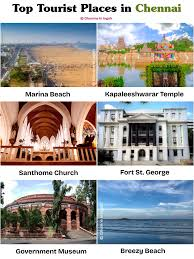
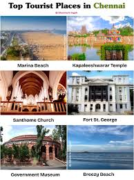

Chennai is famous for its rich culture (Carnatic music, Bharatanatyam), "Detroit of India" auto industry, IT hub, Kollywood film industry, famous temples like Kapaleeshwarar, Marina Beach, delicious South Indian food (idli, dosa, filter coffee), and Kanchipuram silk sarees, making it a major cultural, economic, and educational center in South India. Culture & Arts Carnatic Music & Dance: A major hub for traditional South Indian arts, hosting the world-renowned Madras Music Season. Kollywood: The Tamil film industry, based in Kodambakkam, is a massive entertainment producer. Heritage: Known for its distinctive architecture, historic monuments like Fort St. George, and traditional crafts.